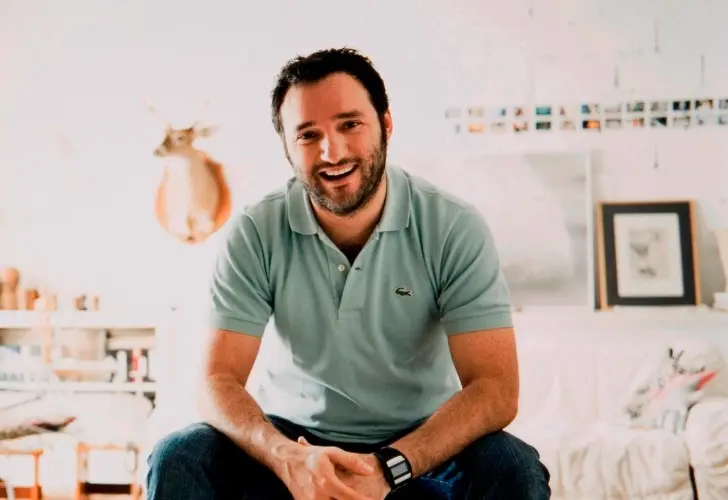
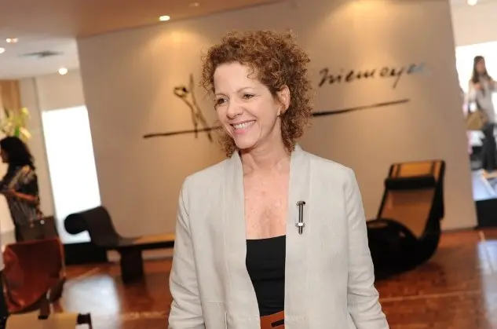
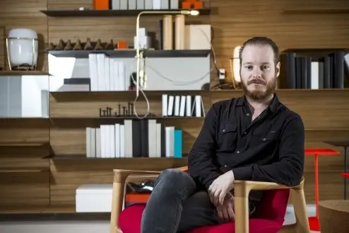

Isay Weinfeld
Um dos mais consagrados designers de interiores e arquiteto brasileiro com prestígio internacional, além de entrar entre os famosos arquitetos brasileiros.
Os projetos de Isay Weinfeld são admirados pela destreza com que trabalha cada detalhe, sempre atento às sutilezas da arte e do design, seguindo a tendência minimalista na arquitetura.
Marcelo Rosenbaum
Marcelo Rosenbaum se tornou ‘pop’ após a participação no quadro ‘Lar Doce Lar’, exibido no programa Caldeirão do Huck e apresentar o programa ‘Decora’, exibido no canal GNT. Entre as suas propostas no design de interiores está a democratização e a valorização de materiais tipicamente brasileiros. A forte identidade cultural e a valorização dos aspectos regionais são inspirações para cada obra de Rosenbaum.
Carlos Motta
Entre os designers de interiores famosos brasileiros, Carlos Motta, é reconhecido mundialmente por produzir mobílias em madeira sustentável. Com um toque brasileiro em suas peças, preza por criações autênticas e marcenaria de ponta com forte influência artesanal.
Jacqueline Terpins
A designer e artista plástica Jacqueline Terpins explora o vidro e o cristal para construção de peças únicas que se destacam no campo do design no Brasil. Móveis de aço e inox, objetos em cristal soprado, madeira e estofados fazem parte do portfólio da artista plástica. Com trajetória nacional e internacional, a designer também desenvolveu uma linha de frascos de perfume para a indústria francesa erreries, além das mobílias para Móveis Teperman.
Jader Almeida
O arquiteto catarinense é prestigiado no Brasil e no exterior. Possui vasta experiência na produção de peças exclusivas para indústrias com um toque de minimalismo e geometria única. Reconhecido internacionalmente, o designer já recebeu homenagem no IF Design Award e no IDEA Design Award.
